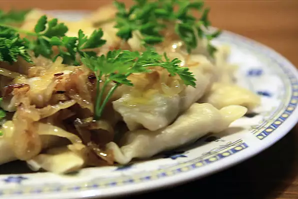

Pierogi

Description
My favourite food. Delicious. Polish. Make it!
Ingredients
Filling
- 1⅓ (15 ounce) containers farmer's cheese
- 7 potatoes, peeled and boiled
- 3 tablespoons vegetable oil, or as needed
- 2½ cups mushrooms, peeled and sliced
- 3 onions, chopped
- 1 tablespoon sour cream
- salt and ground black pepper to taste
Dough
- 8 cups all-purpose flour, or more as needed
- 2 eggs
- 6 tablespoons unsalted butter, room temperature
- 2 cups lukewarm water
Steps
- Pass farmer's cheese and cooked potatoes separately through a food grinder or food processor.
- Heat oil in a large skillet over medium heat and cook mushrooms and onions until soft, about 15 minutes. Remove from heat.
- Combine farmer's cheese, potatoes, mushroom mixture, sour cream, salt, and pepper in a bowl. Mix together and set filling aside.
- Place flour on a clean work surface and make a well in the center. Crack both eggs into the well. Add butter and a few tablespoons of the warm water. Mix with your hands, gradually adding more warm water, 1 tablespoon at a time, as you go. Knead well, continuing to add more water as needed. Knead until dough is soft and smooth, adding more flour to the work surface as needed.
- Cut off 1/4 of the dough and roll out to a thickness of 1/8 inch. Cut out circles using a glass or a round pastry cutter, saving the excess dough for your next batch.
- Fill each dough circle with 1 teaspoon of filling. Fold dough over into a half-moon shape and pinch edges together to seal. Cover with a clean dish towel so pierogi won't dry out and repeat with remaining dough and filling.
- Bring a large pot of salted water to a gentle boil. Add the pierogi in batches, about 20 at a time, and cook until they float to the surface, 10 to 15 minutes. Remove with a slotted spoon and drain in a strainer. Repeat with the remaining pierogi.
Source